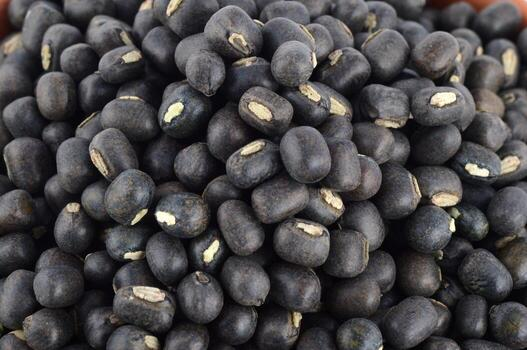
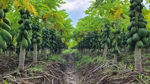
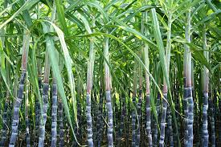
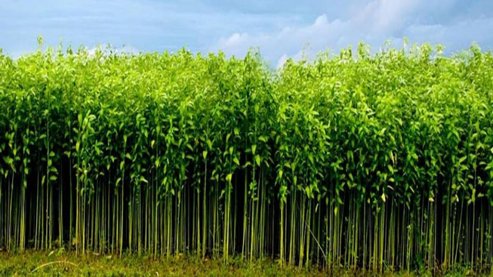
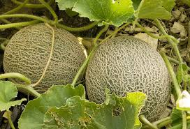
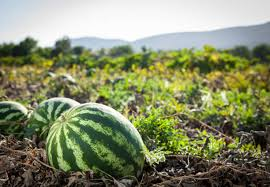

We are dedicated to providing smart and reliable solutions that help users make better decisions. Our platform focuses on simplicity, accuracy, and user-friendly design.The help of modern technology and data analysis, we aim to deliver meaningful insights and improve everyday outcomes.
Learn More
Black gram is a protein-rich pulse crop widely grown in India, especially in warm and semi-arid regions. It improves soil fertility by fixing nitrogen.

Papaya is a fast-growing tropical crop rich in vitamins A and C. It grows well in warm climates with well-drained soil and regular watering.

Sugarcane is a tropical crop grown mainly for producing sugar and jaggery. It needs warm climate, plenty of water, and fertile soil for healthy growth.

Jute is a natural fiber crop mainly grown in warm, humid regions. It is used to make eco-friendly products like bags, ropes, and carpets.

Muskmelon is a warm-season crop that grows best in sandy loam soil with good drainage and plenty of sunlight.

Watermelon grows best in warm climates with well-drained soil and adequate sunlight for healthy fruit development.
Ideal range: 20°C – 30°C Supports healthy crop growth
Optimal range: 50% – 80% Maintains moisture balance
Suitable range: 5.5 – 7.5 Ensures nutrient availability
Required range: 600 – 1200 mm/year Provides sufficient water supply